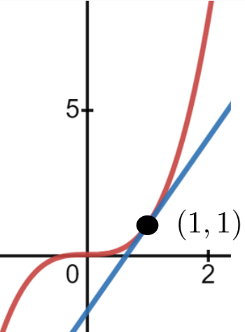
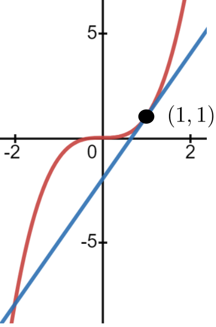
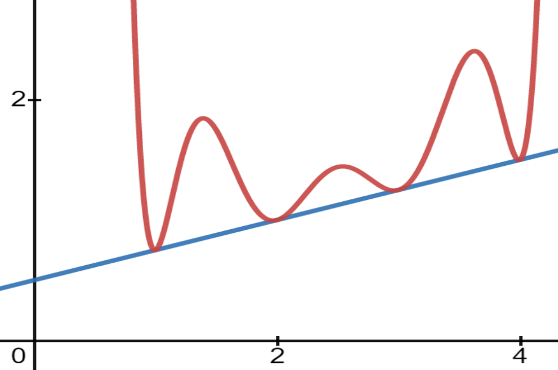
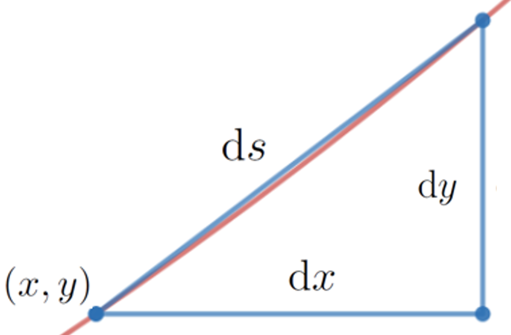
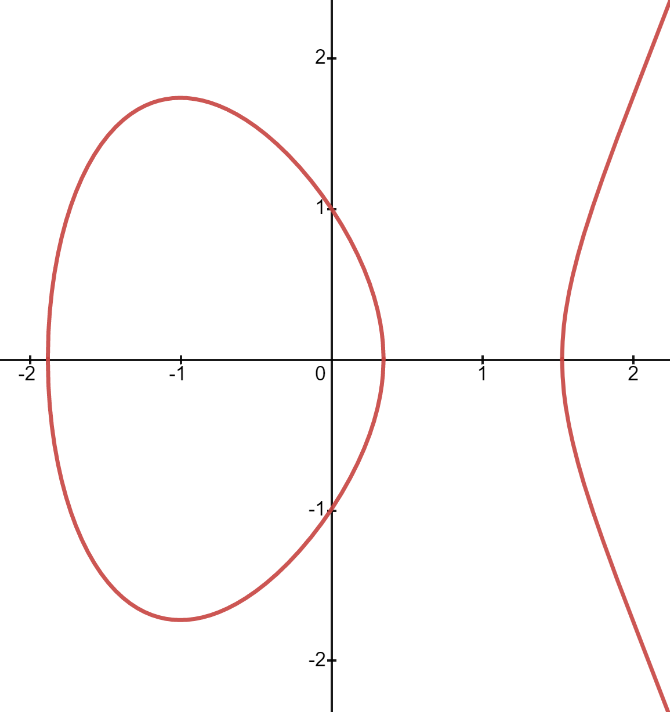
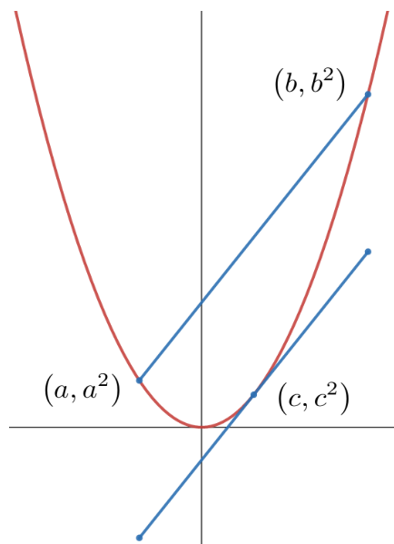
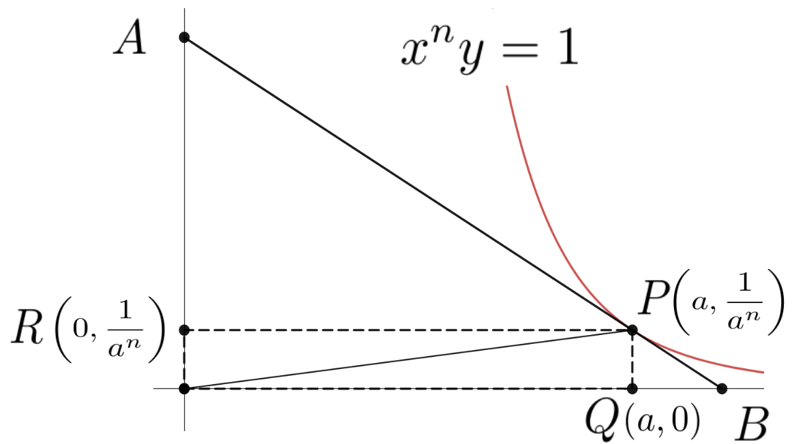

The word tangent comes from the Latin word tangere (to touch). So you’d think it would be easy to define what we mean by “tangent line.” When asked, most people will come up with something like, “The line tangent to a curve is the line that touches the curve at exactly one point.”
Does this seem like a reasonable definition to you? Stop and think about it for a few minutes. We’re obviously offering a plausible sounding definition that we know won’t work. Do you see the problem?
It certainly seems OK, and if we check it with a few simple examples everything looks reasonable. But consider a small segment of the graph of \(y=x^3\) at the point \((1,1)\) and its corresponding tangent line as seen below.

While this certainly seems to fit our notion of a tangent line touching a curve only once, look what happens if we zoom out (see Figure 5.2.1 below). This supposed tangent line will cross (touch) the graph of the curve a second time. In fact, there is only one point on the graph of \(y=x^3\) where the tangent line at that point touches the graph only once. Do you see which point that is? Give this a few minutes thought.

Figure5.2.1.
In view of what we’ve just seen, what do you think the definition of a tangent line ought to be?
It is clear that the nature of the “touching” in Figure 5.2.1 is different at the two points. At \((1,1)\) the blue tangent line “grazes” the graph of \(y=x^3\) at \((1,1)\) exactly as we would expect. But at the other point it actually cuts through the graph.
The difficulty seems to be that we said “touch” when we meant “graze”. How about this definition instead: “The line tangent to a curve is the line that grazes the curve at exactly one point.”
If it is not possible for a line to “graze” a curve at more than one point this could be a workable definition. Unfortunately Drill 5.2.2 shows that this is not true.
Drill5.2.2.
Show that \(y=\frac12x+\frac14\) is the equation of the line tangent to the graph of
at \(x=1, 2, 3, \) and \(x=4\) as seen in the sketch below.

It appears that clearly defining what we mean by “tangent line” is not as simple as it seemed to be at first. This is frustrating because we all have a pretty clear intuitive idea of what we mean. The difficulty seems to be capturing in words the mental image we all share.
Recall that we have informally stated the Principle of Local Linearity as: “Locally any curve is indistinguishable from a straight line.”
But which straight line?
The answer to that question is visible in the differential triangle in Figure 5.2.3 below. It is clear that, locally (near a given point \((x,y)\) on the curve) a curve will look like the hypotenuse of the differential triangle \(\dx{s}\) at the point \((x,y)\text{.}\) So we make the following definition.

Figure5.2.3.Notice that the scale is so small that the graph of the function (the red curve) and its tangent line (the blue hypotenuse) are nearly the same.
Definition5.2.4.The Line Tangent to a Curve at a Point.
The line tangent to a curve, at the point \((a,b)\) is the line which passes through the point \((a,b)\) with slope \(m=\eval{\dfdx{y}{x}}{(x,y)}{(a,b)}\text{.}\)
Do you see what we did here? Intuitively we know what properties we want a tangent line to have. We want it to “touch” or “graze” our curve at a particular point but we’ve seen that neither of those words quite captures everything we need. And what we need is for the tangent line to pass through the tangent point and have the same slope as the function at that point. So we’ve removed the words “touch” and “graze” in favor of the more precise, quantifiable, language of Calculus.
Since we defined the tangent line to be the extension of \(\dx{s}\) to the finite scale we have essentially defined it to have exactly that property we will need to make Differential Calculus useful. Moreover with this definition in place the Principle of Local Linearity can be formalized a bit more.
Definition5.2.5.The Principle of Local Linearity.
Sufficiently close to a given point every smooth curve is indistinguishable from the line tangent at that point.
The history of mathematics is riddled with this sort of backward looking definition and we will see it again. In fact Calculus itself is an example of this process. Newton and Leibniz both knew what they wanted their Calculus Differentialus (Leibniz) and Method of Fluxions (Newton) to do. They worked out their computational procedures intuitively — just as we started with an intuitive understanding of “tangent line.” But coming up with precise definitions and a solid logical foundation was harder. It took about \(200\) years for the mathematical community to devise definitions that gave back what intuition had led us to. This is part of why we are not yet overly concerned about our inability to precisely define a differential. When we finally address this issue in Chapter 13 we will not be devising any new differentiation techniques. We will be providing logical underpinnings for the techniques our intuition has led us to and that our experience has shown to be useful.
Drill5.2.6.
Find an equation of the line tangent to the given curve at the indicated values of \(x\text{.}\)
\(y =\frac{2x}{x+1}\)
when \(x =1.\)
\(y=\dfrac{1}{1+x^2}\)
when \(x=-1\)
\(y=x+\sqrt{x}\)
when \(x=1\)
\(y^2=x^3\)
when \(x=1\)
\(y^3=x^2\)
when \(x=1\)
\(y=\dfrac{\sqrt{x}}{x+1}\)
when \(x=4\)
\(y = 3x\)
when \(x=10\)
\(y = -7x\)
when \(x=-100\)
\(y = -\dfrac{x^2}{\pi}\)
when \(x=\sqrt{\pi}\)
\(y=(3x-1)^{-6}\)
when \(x=0\)
\(y = x^3-\dfrac1x\)
when \(x=1\)
\(y=\sqrt{1+x^2}\)
when \(x=2\)
\(y = \dfrac{x}{x-2}\)
when \(x=0\)
\(y = \dfrac{x}{x-2}\)
when \(x=\frac14\)
\(y = \dfrac{1}{1+x^2}\)
when \(x=\frac12\)
\(y = \dfrac{1}{1-x^2}\)
when \(x=1\)
\(y = \dfrac{1}{\sqrt{x}}\)
when \(x=9\)
\(y = \dfrac{1}{\sqrt[3]{x^2}}\)
when \(x=4\)
\(y = \pi x^2\)
when \(x=\dfrac{1}{\sqrt{\pi}}\)
\(y=\sqrt{2x+\sqrt[3]{64-x}}\)
when \(x=0\)
Problem5.2.7.
Show that the only point on the graph of \(y=x^3\) where the tangent line touches the curve only at the point of tangency is the point \((0, 0)\) and that the line tangent at \((0,0)\) is horizontal. Now graph the curve and the line tangent at \((0,0)\) on the same set of axes. Does this look like a tangent line to you?
Does the graph help you see the significance of Problem 5.2.7? The line tangent to the graph of \(y=x^3\) at the point \((0,0)\) actually crosses the graph at that point. This is weird. And it is exactly counter to our original understanding of what it means for a line to be tangent to a curve.
The next problem will probably strike you as equally weird. But weirdness is acceptable. It is inconsistency that we need to avoid. In both problems the weirdness is a logical consequence of our definition of tangent line. So we will accept Definition 5.2.4 as long as it doesn’t lead to inconsistencies.
Problem5.2.8.
Use Definition 5.2.4 to find the equation of the line tangent to the graph of the straight line \(y=mx+b\) at the point \((a, y(a))\text{,}\) and show that the tangent line is in fact, the original line.
Problem5.2.9.
(a)
Find the equations of all lines tangent to the graph of \(4x^2+4y^2=25\) that are also parallel to the line \(2x-3y=7\text{.}\)
(b)
Find the equations of all lines tangent to the graph of \(16x^2+9y^2=144\) that are also parallel to the line \(8x+6y=8.\)
(c)
Find the equations of all lines tangent to the graph of \(16x^2-9y^2=144\) that are also parallel to the line \(8x+6y=8.\)
Problem5.2.10.
Find those points on the graph of the curve \(y=x^3+5\) where the tangent line is
(a)
Parallel to the line: \(12x-y=17\text{.}\)
(b)
Perpendicular to the line: \(x+3y=2\text{.}\)
Problem5.2.11.
Find an equation of the line(s) tangent to and normal to each of the given curves at the specified points. (You have seen all of these curves previously in Drill 4.3.46)
In Drill 5.2.13 it is tempting to to say that \(\dfdx{y}{x}=\frac{3x^2-3}{2y}\) will give us the slope of the line tangent to the curve at any point \((x,y).\) Typically this would be correct. But not always. For example the line tangent to this curve is horizontal (has slope equal to zero) when
Solving this gives \(x=\pm1\) but it is plainly visible from the graph of equation (5.2) (below) that there is a horizontal tangent line when \(x=-1\text{.}\)

But notice that there is no point on the graph where \(x=1\text{!}\) Obviously it is meaningless to ask for the slope of a curve at a point that isn’t on the curve.
Even if we didn’t have the graph to look at we could still tell that at \(x=1\) there is no tangent line. Setting \(x=1\) and trying to solve for the corresponding \(y\) values we get \(y^2=1-3+1=-1\text{.}\) Since there is no real number that satisfies the equation \(y^2=-1\) we conclude that there is no point on the graph with \(x\)–coordinate equal to \(1\text{.}\)
On the other hand, there are three values of \(x\) that correspond to \(y=0\text{.}\) These would be difficult to compute but from the graph we can see that the tangent line is most likely vertical at all three points. Moreover, to compute \(\dfdx{y}{x}=\frac{3x^2-3}{2y}\) at each of these points we would have to divide by \(y=0\text{.}\)
Obviously when we divide a number by zero we get infinity, and just as obviously the slope of a vertical line is also infinity so everything fits. Right?
No, of course not. This is just a very deceptive coincidence.
Many students come into a Calculus with the impression that dividing by zero results in either zero or infinity. It does not. Division by zero is not meaningful.
Mathematicians say that division by zero is an undefined operation or simply that it is undefined. At first it is not at all clear why this is, so let’s take look at this question.
What does it mean to divide by any number? To take a very concrete example, what does it mean to divide a length of five units by seventeen? (The units could be inches, picometers, or light-years. We don’t care.) It means we want to divide the length \(5\) into seventeen equally sized pieces, right? But we obviously can’t divide five into zero pieces, so even in this very concrete example the phrase “five divided by zero” is simply and utterly without meaning.
From a slightly more abstract viewpoint we could ask for the length of each piece when we divide a length of five into seventeen pieces. We get \(\frac{5}{17}\) of course. That’s what the fraction notation means. But what number do we get when we divide five into zero pieces. Once again the idea has no meaning.
Taking an even more abstract point of view, observe that multiplication and division are inverse operations (they undo each other). Twelve divided by three is four \(\left(\frac{12}{3}=4\right)\) precisely because when we multiply three times four we get twelve (\(3\times 4 =12\)).
Now don’t think of five as a length to be divided, think of it instead as simply a number. So what number can we multiply by zero to get five? Obviously there isn’t any such number so this is a meaningless question.
No matter what we try or how we look at it we cannot find any way to make division by zero meaningful.
Since we can’t divide by zero we will need to be a bit more careful about how we interpret the symbol \(\dfdx{y}{x}\text{.}\) It will give us the slope of the curve (equivalently, the slope of the tangent line) as long as \(\dfdx{y}{x}\) has meaning. But when \(y\) is zero \(\dfdx{y}{x}=\frac{3x^2-3}{2y}\) is meaningless. Thus it appears that for this particular curve we can draw no conclusions whatsoever from our formula about the tangent line when \(y=0\text{.}\) In this case we say that the differential quotient is undefined. In general, the differential quotient is undefined at any point where evaluating \(\dfdx{y}{x}\) requires a division by zero.
Does this mean we can draw no conclusions at all? Certainly not. In fact those values of \(x\) or \(y\) where \(\dfdx{y}{x}\) is undefined will often turn out to be the most useful. Or at least the most interesting. But we are not yet quite prepared to see how to deal with them properly so we will defer this discussion until a later point.
At the very least this warns us that there are subtleties that must be dealt with when using a powerful tool like Calculus. We will avoid these subtleties for a bit longer, but you need to know that they exist. Don’t try to force matters by, for example, blindly dividing by zero as if it is meaningful. We will return to these matters when we have a better understanding of the underlying principles.
END OF DIGRESSION
Problem5.2.14.
Suppose that the two blue line segments in the figure below are parallel. Show that \(c\) is exactly halfway between \(a\) and \(b\text{.}\) (That is, show that \(c=(a+b)/2\text{.}\))

Problem5.2.15.Find the Pattern.
Suppose that \(a\) and \(n\) are positive numbers. In the following sketch the line \(AB\) is tangent to the curve \(x^ny=1\) at the point \(\left(a, \frac{1}{a^n}\right)\text{.}\)

(a)
For \(n=1\) first show that the coordinates of points \(A\) and \(B\) are \(\left(0, \frac{2}{a}\right)\) and \((2a, 0)\text{,}\) respectively, and then confirm that:
area\((\triangle AOB)=2\)
area\((\triangle OPQ)=1/2\)
area\((\triangle BPQ)=1/2\)
area\((\triangle PAR)=1/2\)
(b)
For \(n=2\) first show that the coordinates of points \(A\) and \(B\) are \(\left(0, \frac{3}{a^2}\right)\) and \(\left(\frac32a,
0\right)\text{,}\) respectively, and then confirm that:
area\((\triangle AOB)=\frac{9}{4a}\text{.}\)
area\((\triangle OPQ)=\frac{1}{2a}\text{.}\)
area\((\triangle BPQ)=\frac{1}{4a}\text{.}\)
area\((\triangle PAR)=\frac{1}{a}\text{.}\)
(c)
For \(n=3\) first show that the coordinates of points \(A\) and \(B\) are \(\left(0, \frac{4}{a^3}\right)\) and \(\left(\frac43a,
0\right)\text{,}\) respectively and then confirm that:
area\((\triangle AOB)=\frac{8}{3a^2}\text{.}\)
area\((\triangle OPQ)=\frac{1}{2a^2}\text{.}\)
area\((\triangle BPQ)=\frac{1}{6a^2}\text{.}\)
area\((\triangle PAR)=\frac{3}{2a^2}\text{.}\)
(d)
Find a formula for the coordinates of points \(A\) and \(B\) for any value of \(n\) and then:
Find the the area of \(\triangle AOB\) for any value of \(n\text{.}\)
Find the the area of \(\triangle OPQ\) for any value of \(n\text{.}\)
Find the the area of \(\triangle BPQ\) for any value of \(n\text{.}\)
Find the the area of \(\triangle PAR\) for any value of \(n\text{.}\)
Problem5.2.16.
Consider the equation \(y=x\sqrt[3]{x-8}\text{.}\)
(a)
Find the equation of the line tangent to the graph of when \(x=0\text{.}\)
(b)
Does a line tangent to the graph of this function exist at \(x=8\text{?}\) If so, find the equation of the line. If not, explain why not.
Hint.
Have you looked at the graph yet?
These last three problems illustrate that while many otherwise difficult computations can be done “in these lines, as if by magic” (to quote Leibniz) there are still a great many subtleties to be accounted for. There is still plenty of room for creative, analytical problem solving.
We will come back to some of these subtleties later. For now keep in mind that while Calculus is a very powerful tool it does not allow us to solve all problems blindly, by simply moving the pebbles.